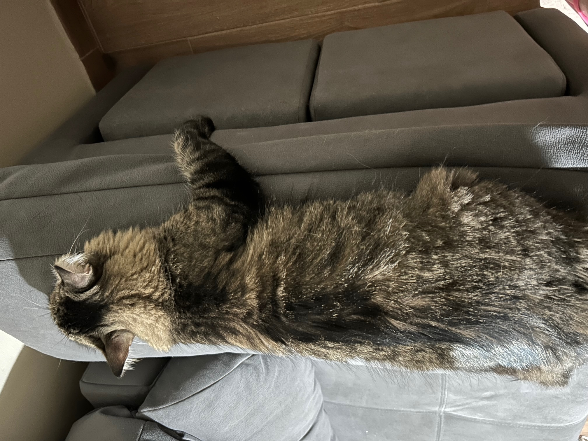

Es importante conocer los momentos en los que no se debe molestar a un minino. Ya no por las posibles consecuencias a la hora de llevarse un arañazo, sino por el hecho de que a nosotros no nos gustaría tener a nadie detrás nuestra invadiendo nuestro espacio vital constantemente cuando no queremos.
¿Cuándo no tocar a un gato?
PELIGRO, ¡Ojo cuidao!, delante de nosotros podemos ver clarísimamente una trampa felina. Parece que quiere que le acariciemos su panzota, pero NO, es una trampa mortal para agarrate el brazo y hacerte el cepo.
.jpeg)
En este caso vemos a un felino que desea descansar plácidamente en su zona de confort. No debemos intentar acercarnos ni entrar en su zona, podríamos incomodarlo, o incluso provocar que nos arañase. (Tan solo imagina que estuvieses en tu casa y entrase un extraño por la ventana del salon, ¿a que no sería agradable?)
Una vez hemos visto cuando no tocarlo, ahora veremos, ¿Cómo se acaricia un gato?
En este apartado vamos a daros un par de truquitos para enamorar a tu felino.
Podemos acariciarlo desde la cabeza hasta la cola, suavemente y con muchos mimos.

Una zona que a los gatos los vuelve locos es entre, detrás y debajo de las orejas, simpre con las yemas de los dedos y con mucho cariño.
.jpeg)
Y, dejando lo mejor para el final, el sitio más deseado por todos los felinos para los mimos es por debajo de la barbilla y en las mejillas, tras lo bigotes. Cualquier minino va a agradecer caricias en esas zonas con dulces cabezazos.
HORA GATUNA
.jpeg)
.jpeg)
.jpeg)
.jpeg)
Desde WLC protectora felina recordamos que todos los gatos de nuestro apartado "Nuestros gatos" están en adopción. Para cualquier duda, por favor, pónganse en contacto con nosotros en nuestra página de contacto.